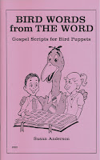

Gospel Bird Scripts
3/29/2009
{kind=link}

As long as I've mentioned bird puppets and the scripts you might use with them (see post below), I should mention this book by Susan Anderson: Bird Words From the Word. Containing 12 ministry routines, this resource book was one of the most popular bird routine books published and sold by Maher Studios. Filled with tasteful humor, too. Some have questioned whether ministry messages can be effectively communicated through non-human puppets. The answer is a resounding, "yes!" This book is filled with original ideas and lines to get a person started.
V: Do birds ever wear tennis shoes?
F: Yes, but they're pigeon toed.
Bird Words From The Word is always available from the Maher Bookstore and is also available now through one of my eBay auctions ending tomorrow (Monday) morning. Click here to see them all.
V: Do birds ever wear tennis shoes?
F: Yes, but they're pigeon toed.
Bird Words From The Word is always available from the Maher Bookstore and is also available now through one of my eBay auctions ending tomorrow (Monday) morning. Click here to see them all.